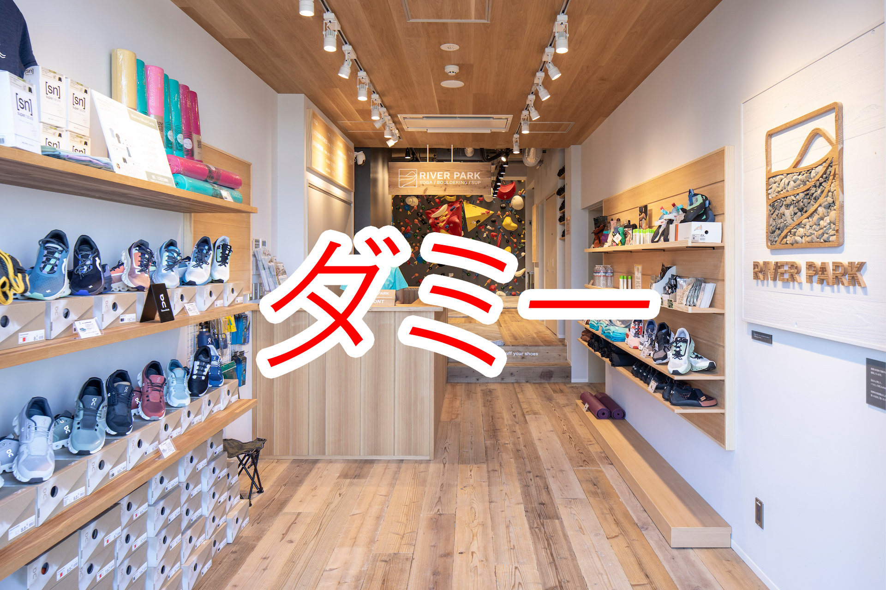
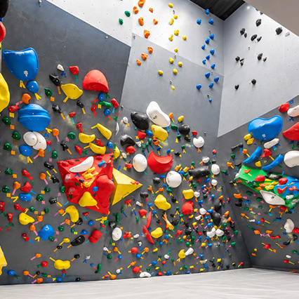

Bouldering Program
ボルダリングプログラム
パズルを解くように、夢中で身体を動かす楽しさと全身のシェイプアップ
ENVIRONMENT & EFFECTS ボルダリングの行う環境と心身への効果

高さ3.5m〜4m・約100ルートの専用ウォール
1Fにあるボルダリングジムは、初心者向けから中級者向けまで多彩な傾斜と約100の課題ルートを完備。厚手の安全マットを敷き詰め、レンタルシューズやチョークも常備しています。

頭と身体を使ってパズルを解くように登る
決められた色や形のホールドを使い、ゴールを目指して壁を登ります。足の置き方や重心移動のコツをインストラクターが丁寧にレクチャーするため、腕力に頼らず登ることができます。

背中・体幹の引き締めと圧倒的な達成感
壁の中でバランスを保つことで背中や体幹、指先まで全身の深層筋が自然に引き締まります。登り切った瞬間の達成感と、登ることだけに没頭する爽快なストレス解消が得られます。
BOULDERING & EFFECTS
ボルダリングの特徴と心身への効果
パズルのように登る楽しさ
頭と身体を同時に使う爽快感ロープを使わず、高さ3.5m〜4mの壁に配置されたホールド（石）をどの順番で掴み、どこに足を置くかをイメージしながら登るスポーツです。腕力だけでなくバランスと体重移動で登れるため、女性や初心者の方にも人気です。
主な効果：集中力・思考のリフレッシュ ／ 達成感によるストレス解消
全身の引き締めと体幹強化
背中・お腹・指先までしなやかに壁の中でバランスを保ちながら手足を伸ばすことで、普段意識しにくい背中の筋肉や体幹、股関節の柔軟性が自然に養われます。夢中で登っているうちに全身のシェイプアップにつながります。
主な効果：背中・肩甲骨まわりの引き締め ／ 体幹・バランス力の向上
手ぶらで安心の体験サポート
シューズ・チョーク無料レンタル初心者〜中級者向けまで約100ルートをご用意。プログラムにご参加の方はクライミングシューズとチョークのレンタルが無料のため、動きやすい服装だけで初めての日から安心してお楽しみいただけます。
設備・サポート：約100ルート完備 ／ インストラクターによる基礎レクチャー
BOULDERING & INSTAGRAM
Instagramで見るボルダリングの魅力
公式Instagramで配信しているボルダリングの解説投稿や、実際に通われているお子様・会員様のインタビュー動画です。